Đăng nhập với AWS Cognito sử dụng OTP
Ngày 13 tháng 10 năm 2018
Mình có một task là viết API để đăng nhập, sử dụng AWS Cognito. Sau khi đăng nhập xong phải gửi OTP code về SMS cho người dùng để xác thực. Document của AWS viết không rõ phần này nên mình viết lại để dành cho người sau khi cần có cái để tra cứu.
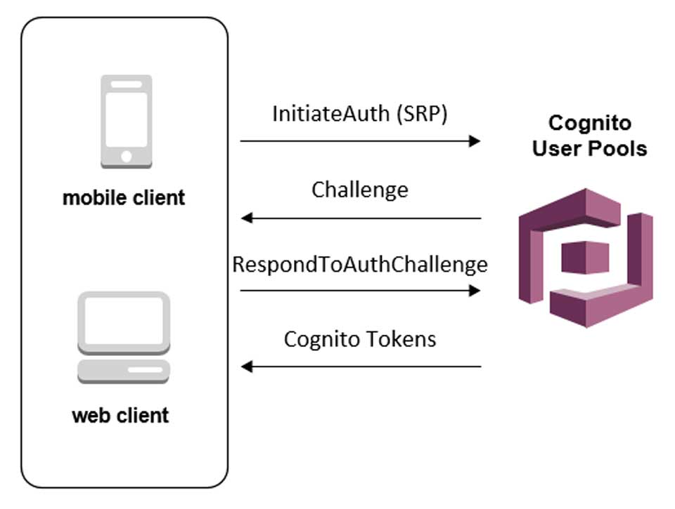Tổng quan
AWS Cognito có 2 loại authentication là cho phép người dùng tự cấu hình (User Pool) hoặc dùng các dịch vụ có sẵn (Identity Pool). Ở đây, mình sẽ dùng dạng User Pool. Công việc cần làm như sau:
- Tạo User Pool
- Viết code đăng nhập
Tạo User Pool
Vào trang chủ của AWS Cognito, chọn Manage User Pool » Create a user pool.
Bạn nhập tên User Pool và chọn Step through settings để tự cấu hình.
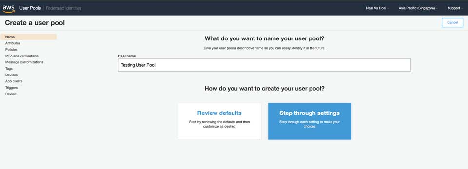Bước này, bạn chọn thuộc tính của User Pool. Ở đây, mình cần đăng nhập bằng số điện thoại, không cần thuộc tính gì thêm nữa nên chọn Email address or phone number, đánh dấu chọn Allow phone numbers. Nhấn Next Step.
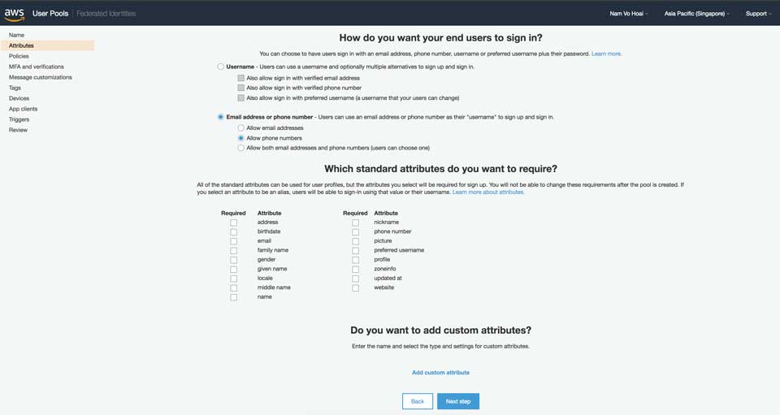Tiếp theo là tuỳ chỉnh chính sách của User Pool. Đầu tiên là phần mật khẩu ở phần What password strength do you want to require?, bạn muốn cấu trúc của mật khẩu như thế nào, độ dài, có chữ thường, có chữ hoa, có số, có kí tự đặc biệt. Tiếp theo là bạn có muốn người dùng được tự do đăng ký tài khoản hay chỉ admin được phép tạo thì chỉnh ở phần Do you want to allow users to sign themselves up?. Nếu bạn chỉ cho phép admin tạo tài khoản, thì tài khoản sẽ bị hết hạn trong vòng bao nhiêu ngày thì chỉnh ở How quickly should user accounts created by administrators expire if not used?.
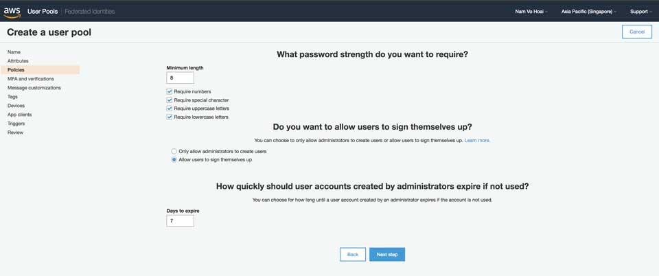Chỗ này sẽ giúp bạn có gửi OTP code hay không. Ở Do you want to enable Multi-Factor Authentication (MFA)?, bạn chọn là Required nhé. Ý nghĩa như sau:
- Off - Không có Multi-Factor Authentication gì hết.
- Optional - Chỉ có phần đăng ký là sẽ gửi mã về để xác nhận. Còn đăng nhập thì không. Phải bật MFA cho từng user lên, khá cực.
- Required - Mặc định là đăng ký lẫn đăng nhập đều bắt buộc sử dụng mã để xác nhận.
Ở phần Which second factors do you want to enable?, bạn check vào SMS text message để gửi SMS cho user và Time-based One-time Password để sử dụng code OTP. Ở Do you want to require verification of emails or phone numbers? thì mình chọn Phone Number được rồi. Ở You must provide a role to allow Amazon Cognito to send SMS messages thì cứ nhập tên gì đó rồi nhấn Create Role sẽ ra được ARN như hình dưới đây.
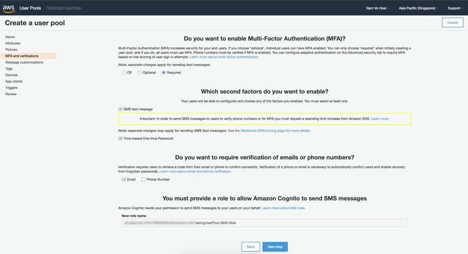Tiếp theo là tuỳ chỉnh lại nội dung của SMS hoặc Email khi kích hoạt MFA. Không thích thì cứ nhấn Next Step.
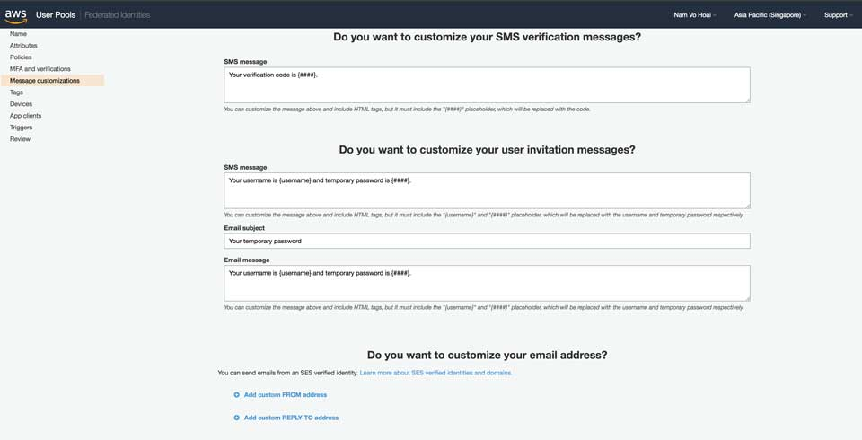Bước này thích thì chỉnh, không thì Next Step.
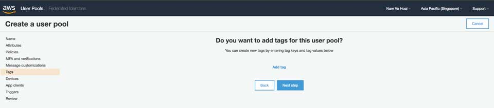Vụ remmember user's devices hình như phục vụ mục đích SEO. Cá nhân mình chọn NO vì yêu cầu không cần và đỡ phải chỉnh code tè le.
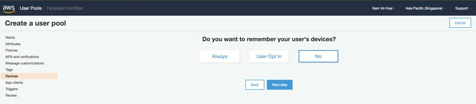Bước kết nối với App Clients thì cứ mạnh dạn chọn Add an app client. Về phần cấu hình thì nhớ không được check Generate client secret để lúc code không bị lằng nhằng và chỉ check Enable username-password (non-SRP) flow for app-based authentication (USER_PASSWORD_AUTH).
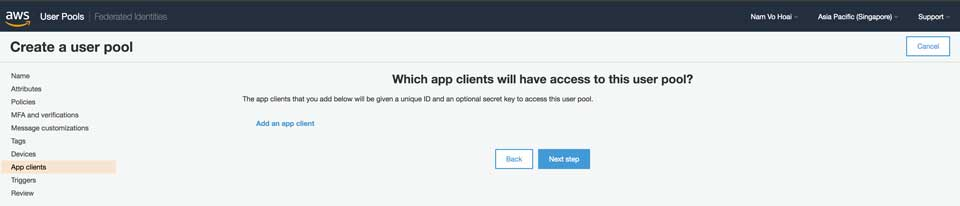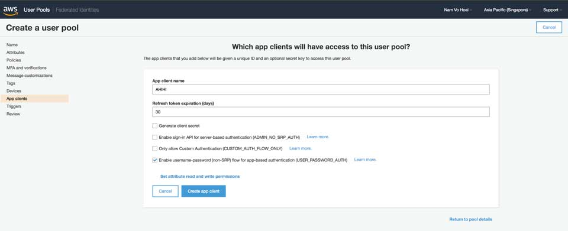Ở bước kết nối với Triggers thì bạn có thể bỏ qua. Cơ chế ở đây là sẽ dùng AWS Lambda để xử lý các sự kiện liên quan đến Authenication.
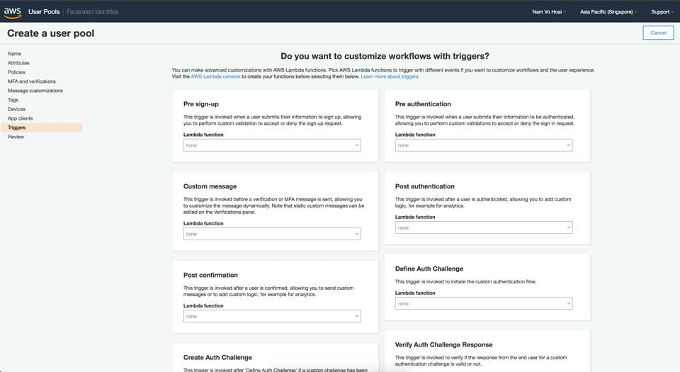Xong xuôi thì lúc review sẽ như sau. Nhấn Create pool được rồi.
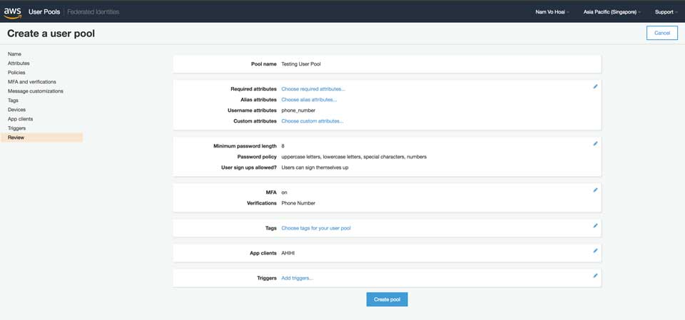Viết code
Tổng quan
Phần này là đau đớn nhất luôn. Vì document của Amazon viết rất tệ. Bạn có thể vào link hướng dẫn của Amazon viết dành cho JavaScript. Nhưng, nó chỉ dành cho phía client còn phía server thì chỉ xài được vụ đăng ký.
Ban đầu, mình google thì thấy hướng dẫn dùng amazon-cognito-identity-js nằm trong phần Auth của amplify-js để xử lý. Điều nổi máu đầu tiên, nếu bạn xài amazon-cognito-identity-js thì code của bạn khá là thủ công. Còn xài aws-amplify code sẽ khoẻ hơn. Bạn có thể tham khảo cách viết của 2 thằng này, cùng giải quyết một vấn đề nhé.
Để dễ hình dung thì mình sẽ show một tí code cho các bạn xem.
Đăng nhập
Phần đăng ký khá dễ, vì bạn có thể dùng amplify-js hoặc amazon-cognito-identity-js đều giải quyết được vấn đề cho API phía back-end. Tuy nhiên, để đăng ký khi viết API bằng Node.js thì 2 anh này rất ư là phế. Phế vì bạn phải nhập OTP code chung với Username và Password. Như vậy sẽ ảnh hưởng đến workflow. Do đó giải pháp là bạn phải tách thành 2 API riêng biệt.
- Đăng nhập với username và password
- Nhập code OTP để xác nhận
Thư viện để giải quyết vụ này là aws-sdk. Luồng xử lý vấn đề như mô hình sau.
Đăng nhập với username và password
Phần này, bạn sử dụng hàm initialAuth của aws-sdk.
Ở đây, bạn sẽ dùng AuthFlow là USER_PASSWORD_AUTH. Và để sử dụng thì App client lúc bạn tạo User Pool phải check vào Enable username-password (non-SRP) flow for app-based authentication (USER_PASSWORD_AUTH) mới dùng được. Đi kèm với AuthFlow này, tham số trong AuthParameters sẽ là USERNAME và PASSWORD.
Lưu ý một điều, trong response trả về, bạn phải lưu lại SESSION để xài cho bước sau.
Nhập code OTP để xác nhận
Bước này được gọi là challenge trong thuật ngữ của aws-sdk. Sau khi hệ thống gửi cho bạn code OTP gồm 6 số, bạn sẽ cần đến một API khác để nhập 6 số này. Hàm giải quyết vụ này là respondToAuthChallenge.
Challenge cho vụ này là SMS_MFA. Tham số cho nó là SMS_MFA_CODE và USERNAME. Ngoài ra, nhớ truyền vào session của request trước nữa nhé.